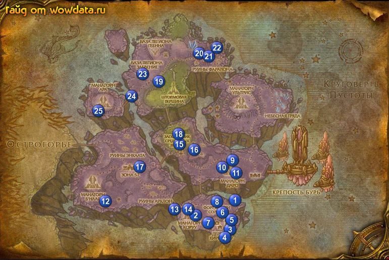

1) Идите к ферме где вы нашли корову, рядом в амбаре 1 (60, 78) вы увидите Некромантский фокус. Кликните по нему чтобы закончить <В поисках доказательств>, начните <Длительные подозрения>.
2) Теперь бейте духов которых вы тут увидите, когда закончите вернитесь к башне и закончите квест, начните <Захватить талисман>.
3) Идите обратно к Церковный двор 1 (60, 80), вы увидите 3 сарая, откройте среднюю кабинку. Вернитесь к башне и закончите квест, игнорируйте <Уничтожить Набериуса!> если у вас нету группы.
4) Идите на запад к 2 (51, 83) и собирайте [Энергетический куб-изолятор] для <Потенциальный источник энергии> так же ищите Чароплет Мариана для <Печать Красуса>, она ходит по кругу, снаружи.
5) Когда вы получите [Печать Красуса], используйте посох, и появится Верховный маг Варгот , закончите у него квест и начните <Компендиум Красуса>.
6) Вернитесь к башне, у Лейтенант-колдун Морран закончите <Потенциальный источник энергии>, начните <Постройка периметра>.
7) В доме за башней вы найдете главу 3 3 (59, 88). Главу 2 в доме напротив, который стоит прямо у обрыва 4 (58, 90). Главу 1 в левом из двух соседних домов 4 (59, 89) . Когда соберете все 3 свитка, снова используйте посох и появится Верховный маг Варгот , закончите квест и начните <Открыть Компендиум>.
8) Пройдите на восток 5 (59, 85), Вы увидите руну. Подойдите и используйте [Устройство пробуждения рун] для <Постройка периметра>, проделайте тоже самое с остальными рунами 6 (57, 82) и 7 (54, 86).
9) Вернитесь к башне и закончите квест, начните <Пожар в Форте Ярости Солнца>, затем у Комендант Смертехрон начните <Гарнизон Ярости Солнца>.
10) Идите на север в Форт Ярости Солнца 6 (56, 81) и бейте лучников для <Гарнизон Ярости Солнца> и бейте Хранитель пламени из клана Ярости Солнца ради факела, как только получите факел, начинайте поджигать балисты и палатки для <Пожар в Форте Ярости Солнца>.
11) Рушительница чар Маратиль ходит около нижней платформы 8 (56, 78), убейте ее ради [Гелиотропное Око] для <Открыть Компендиум>, теперь снова используйте посох, закончите квест у Верховный маг Варгот и начните <Трофей призывателя Кантина>.
12) Идите по мосту на север в Манагорн Даро 9 (59, 62), убейте Призыватель Кантин для <Трофей призывателя Кантина>. Когда получите [Камень Студенора], сново используйте посох чтобы призвать Верховный маг Варгот, закончите у него квест и начните <Страж Ар'келос>.
13) бегите вниз через мост к уже известной башне, у Лейтенант-колдун Морран закончите <Пожар в Форте Ярости Солнца>, затем, рядом с ним закончите <Гарнизон Ярости Солнца> и начните <Покончить с Даэллисом>. Войдите в башню и убейте Ар'келос для <Страж Ар'келос>, затем идите наверх башни к Верховный маг Варгот и закончите квест, игнорируйте <Найти Хранителя Ключей>, если у вас нету группы.
14) Бегите назад в Манагорн Даро, в западной части 10 (57, 65) вы увидите Наставник Даэллис Стрелок Рассвета, убейте его для <Покончить с Даэллисом>.
15) Затем вернитесь вниз к башне и закончите этот квест. Далее бегите назад, на восток от Манагорн Даро к Космоворот 11 (65, 66). Откройте пункт перелетов около города, затем идите внутрь и начните <Кровная м... есть!>.
16) Чтож, теперь выйдите из города и ищите Прыгуана-ловец . Используйте кристалл, который вам дали, чтобы вызвать Зеппит, для помощи вам в собирании крови (вернее он ее и собирает). Учтите вы должны стоять рядом с мобом при его смерти иначе не получите кровь с него.
17) Когда соберете кровь закончите квест.
18) Летите в Зона 52.
19) Когда войдете вы увидите Папаша Колесун, начните у него <Забирай свою часть>. (если он не дает вам квест сейчас, то выполните следующие 2 пункта и попробуйте снова).
20) Около гостиницы поговорите с Ловчий Пустоты Кай'джи, закончите у него <Добыча артефакта для Консорциума>, начните <Груда духов Астрала>.
21) Войдите в гостиницу, у дренея закончите <Измерение энергии Искажения>, рядом с ним закончите <Описание панели управления Б'наара> и начните <Отключить Манагорн Б'наар>.
22) Летите в Шаттрат, там прыгните в портал ведущий в одну из столиц, выучите скиллы и по руне вернитесь в Зона 52.
23) У вас должно быть 45 – 50% на 69 лвл.
24) Идите на запад в Манагорн Б'наар, войдите внутрь с южной стороны и вы найдете Надзиратель Тередис, убейте его ради кристала. Затем вырубите панель управления и не давайте ее активировать 2 минуты.
25) Идите к 12 (27, 77) и бейте Налетчик из братства Заксис Ловчий из братства Заксис Душитель из братства Заксисдля <Груда духов Астрала>, и ищите Астральная технология вокруг лагеря для <Забирай свою часть>.
26) Бегите обратно в Зона 52 и войдите с восточной стороны, поговорите с Папаша Колесун и закончите <Забирай свою часть>, начните <Легион – на мусор!> и <Помощь Мамаше Колесун>.
27) Подойдите к Ловчий Пустоты Кай'джи около гостиницы и закончите <Груда духов Астрала>, начните <Астральный налетчик Несаад> и пропустите остальные.
28) Войдите в гостиницу, поговорите с Анахорет Каржа и закончите <Отключить Манагорн Б'наар>, начните <Отключить Манагорн Коруу>. Затем рядом с ней начните <Нападение на Манагорн Коруу>.
29) Идите вниз к холму, найдите Астральный налетчик Несаад 12 (27, 80) и убейте его для <Астральный налетчик Несаад>.
30) Идите на восток к Манагорн Коруу 13 (46, 81), бейте снаружи здания Чародей клана Ярости Солнца и Ученый клана Ярости Солнца внутри для <Нападение на Манагорн Коруу>, внутри вы найдете Надзиратель Сейланна 14 (49, 81) из него падает [Кристалл доступа к Коруу], затем идите к центру управления опять вырубите ее и не давайте запустить 2 минуты. Убивайте мобов которые попытаются сделать это.
31) Идите на северо-запад внутрь Заповедник "Среднее королевство" 15 (46, 56)
32) У Гарудж начните <Дризья нужна твоя помощь>, затем у Мамаша Колесун закончите <Помощь Мамаше Колесун> и начните <Мусор одного демона...>.
33) У Мердад начните <Провести диагностику> и <Новые возможности>, затем у Шоли Пор начните <Поддерживая видимость>.
34) Идите на юг к Дризья и закончите <Дризья нужна твоя помощь>, пропустите квест не его сопровождение, если у вас нету группы.
35) Идите на север к Захламленное поле 16 (50, 59) и бейте там Мо'арг-кузнец рока и Мо'арг-инженер для <Легион – на мусор!>, а так же ищите Деталь разрушителя Скверны для <Мусор одного демона...>.
36) Пройдите немного на север 15 (48, 55), вы увидите Диагностическое оборудование для <Провести диагностику>.
37) Теперь бейте Вырывающая клыки рысь для <Поддерживая видимость>, так же ищите Колокол из слоновой кости (ростущие тут цветы) для <Новые возможности>.
38) Вернитесь к Застава срединных земель 15 (46, 56), у Мамаша Колесун закончите <Мусор одного демона...>, начните <Коготь Рока? Вырвать с мясом!>.
39) У Мердад закончите <Новые возможности> и <Провести диагностику>, начните <Покончить с вредителями>, затем пройдите наверх к Шоли Пор и закончите <Поддерживая видимость>, начните <Динамический дуэт>.
40) Бегите на запад к Зона 52, у Папаша Колесун закончите <Легион – на мусор!>, затем подойдите к Ловчий Пустоты Кай'джи и закончите <Астральный налетчик Несаад>, начните <Запрос о содействии>.
41) Идите в гостиницу к Анахорет Каржа, закончите <Отключить Манагорн Коруу>, начните <Отключить Манагорн Даро>, у Экзарх Орелис рядом с ней, закончите <Нападение на Манагорн Коруу> и начните <Инструкции Ярости Солнца>.
42) Идите обратно на восток к Застава срединных земель, закончите <Запрос о содействии>, начните <Изъятие по праву>.
43) На востоке или юго-востоке найдите Коготь Рока 16 (50, 57 примерно), убейте его для <Коготь Рока? Вырвать с мясом!>.
44) Идите на восток к Манагорн Даро и бейте мобов ради [Военный инструктаж Ярости Солнца] и [Чародейский инструктаж Ярости Солнца] для <Инструкции Ярости Солнца> и так же ищите [Ящик с геодезическим снаряжением] для <Изъятие по праву>.
45) Найдите Надзиратель Атанел с южной стороны здания 11 (60, 68), с него падает [Кристалл доступа к Дуро] для <Отключить Манагорн Даро>, затем идите к понели управления и по накатанной схемме вырубите ее и не давайте активировать 2 минуты.
46) Идите обратно к Застава срединных земель и поговорите с Гарудж, закончите <Изъятие по праву>, начните <Аудиенция у принца>.
47) У Мамаша Колесун закончите <Коготь Рока? Вырвать с мясом!> и начните <Предупредить Зону 52!>
48) Бегите в Зона 52 и поговорите с Командующий ракетами Фьюзеляж закончите <Предупредить Зону 52!> начните <Вомиза, доктор псевдотехнических наук>
49) Идите в гостиницу к Анахорет Каржа закончите <Отключить Манагорн Даро> следующую часть игнорируйте затем у Экзарх Орелис сдайте <Инструкции Ярости Солнца> и начните <Помощь извне>
50) бегите к 17 (37,63) и закончите <Вомиза, доктор псевдотехнических наук> следующую часть игнорируйте
51) бегите к озеру 18 (46,53) и убивайте крокодилов для <Покончить с вредителями> затем вернитесь в Застава срединных земель и закончите квест начните <На Штормовую Вершину>
52) сейчас у вас должно быть примерно 80-85% на 69 лвл
53) следуйте по дороге через мост к 19 (41,32) там вы увидите лифт это Штормовая Вершина
54) около лифта стоит Аурин Лунное Сияние начните <Растительность заповедников> потом садитесь на лифт и едте вверх
55) бегите к Гхабар и закончите <На Штормовую Вершину> начните <Диагноз: критический> затем идите налево и между двумя зданиями вы увидите Зефирион начните <Исследование руин> затем у Ловчий Пустоты Наутис начните <Приспешники Кулутаса> и <Сквернобот – нет, спасибо!>
56) поднимитесь выше откройте пункт перелетов он будет слева от вас. зайдите в здание и у Проекция нексус-принца Харамада закончите <Аудиенция у принца> и начните <Триангуляция: точка первая>
57) покиньте здание и у Оди Иголка закончите <Динамический дуэт> начните <Сбор деталей>
58) идите в гостиницу и сделайте её вашим домом
59) спускайтесь вниз на лифте рядом с цветками используйте [Модулятор энергетического поля] когда они мутируют убивайте их для <Растительность заповедников>
60) идите на северо восток к Сегмент генератора сферы и используйте [Диагностический прибор] ради <Диагноз: критический>
61) в Руины Фаралона начинайте убивать Горзиеки Дикоглаз и Гончая Кулутаса для <Приспешники Кулутаса> также используйте [Геодезические знаки] на баннеры дренеев ради <Исследование руин> их координаты 1: 20 (51,20), 2: 21 (54,22), 3: 22 (55,19)
62) идите на запад к 23 (37,28) и убивайте Ган'арг-мекжинер ради [Конденсированный газ Пустоты] соберите 5 штук и идите к любому голему и закончите квест <Сквернобот – нет, спасибо!> Вам нужно проделать это всего 1 раз совершенно не нужно отключать всех роботов
63) идите в Лагерь Тулумана 24 (34,38) и у Кайлаан закончите <Помощь извне> начните <Темный пакт> затем идите к Тулуман Торговец Ветром начните <Покончить со штейгером> потом у Ловчий Пустоты Оазул начните <Нейтрализовать чародеев Хаоса>
64) пока вы в этом месте убивайте Ган'арг-астральный ремонтник, Дочь Судьбы, и Мо'арг-мастер искажения для <Темный пакт> а так же Пустомант из клана Ярости Солнца для <Нейтрализовать чародеев Хаоса>
65) когда вы убили Дочь Судьбы и Пустомант из клана Ярости Солнца, идите вниз к Рудник Треллеума 25 (26,42) у Штейгер Закат Солнца закончите <Покончить со штейгером> начните <Покончить с Подчинителем> мобы дя этого квеста находятся в конце тунеля. (На первой развилке направо на второй налево)
66) телепортнитесь руной в Штормовая Вершина
67) у Гхабар закончите <Диагноз: критический> и начните <Испытание прототипа> у Зефирион закончите <Исследование руин> за ним закончите <Приспешники Кулутаса> и <Сквернобот – нет, спасибо!> начните <Наилучшая защита> сейчас вы должны быть
дружелюбными с Консорциум
68) Cпуститесь на лифте к Аурин Лунное Сияние, закончите <Растительность заповедников>, начните <Существа Эко-Сфер> Cейчас вы уже точно должны бить 69лвл и имень 5-10% на 70 лвл